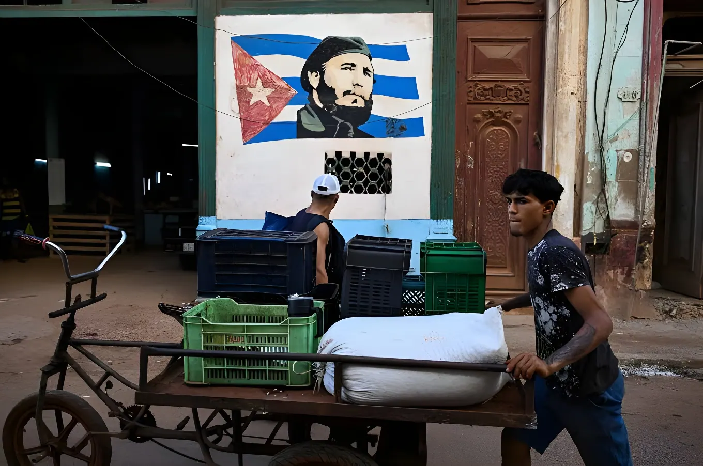

🕯️Pannes électriques à répétition, économie en chute libre, population en recul historique, dialogue diplomatique « au point mort » : à l'été 2026, la crise cubaine ne connaît plus de trêve. Six mois après le début du blocus pétrolier américain, l'île cumule les records négatifs, tandis que Miguel Díaz-Canel refuse de parler d'effondrement.
Depuis l'instauration, en janvier 2026, d'un blocus pétrolier de facto par l'administration Trump, le réseau électrique cubain s'effondre par à-coups. L'île a connu au moins six pannes générales depuis le début de l'année, la plus récente survenue dans la nuit du 2 au 3 août 2026, plongeant environ dix millions de personnes dans le noir. Les tentatives de reconnexion ont ensuite été retardées par des orages, selon l'opérateur public Unión Eléctrica, qui évoque des perturbations directes sur les groupes générateurs en cours de remise en service.
Cette panne du début août est intervenue moins d'un mois après une précédente coupure totale en juillet, dans un contexte de canicule où les températures dépassent régulièrement les 34°C. À Cuba, la vie s'organise désormais autour de brefs retours de courant, parfois en pleine nuit, pendant lesquels les habitants se précipitent pour cuisiner, recharger leurs téléphones ou conserver ce qui peut encore l'être au réfrigérateur. Sur le Malecón de La Havane, nombre de Cubains dorment à la belle étoile pour échapper à la chaleur des logements privés d'air conditionné.
La cause du blocage reste avant tout l'approvisionnement en brut : un seul pétrolier est arrivé sur l'île depuis janvier 2026, le navire russe Anatoly Kolodkin, en mars. Le déficit de production électrique a atteint jusqu'à 1 955 mégawatts, selon des estimations reprises par plusieurs médias spécialisés, dans un parc de centrales thermoélectriques vieillissantes, dont certaines fonctionnent depuis plus de quarante ans.
Sur le plan économique, la Commission économique pour l'Amérique latine et les Caraïbes (CEPALC) anticipe pour Cuba un recul du PIB de 6,5% en 2026 — la plus forte contraction de la région —, qui s'ajoute à un effondrement cumulé d'environ 26% depuis 2020. Le tourisme, l'une des rares sources de devises de l'île, s'est effondré de 55,8% sur les quatre premiers mois de l'année, selon l'Office national des statistiques (ONEI). Sur le marché informel, le taux de change du peso cubain est passé de 515 à 680 pour un dollar en l'espace de trois mois, selon le média indépendant elTOQUE. Le 26 août 2026, Díaz-Canel a lui-même reconnu, dans un entretien au quotidien brésilien Folha de S.Paulo, que l'économie cubaine s'était contractée de 15% depuis son arrivée au pouvoir.
Face à cette dégradation, l'Assemblée nationale a approuvé le 18 juin 2026 un paquet de 176 mesures économiques et sociales réparties en 23 axes — la plus vaste tentative de réforme structurelle depuis la Période spéciale des années 1990. Le texte autorise, sur le papier, la création d'une banque privée, de bureaux de change privés et l'investissement de la diaspora. Mais sa mise en œuvre reste largement virtuelle : 148 normes et 32 lois doivent encore être adoptées, sans calendrier public, et l'économiste cubain Pedro Monreal a qualifié le paquet d'« hybride difforme », relevant que le verbe « autoriser » y apparaît vingt-neuf fois — signe, selon lui, d'une logique de concessions administratives plutôt que de droits économiques garantis.
« Il ne peut pas y avoir de dialogue sous l'oppression. Il faut chercher une voie de dialogue sans conditions préalables. »
— Miguel Díaz-Canel, entretien à Folha de S.Paulo, 26 août 2026La crise s'accompagne d'un effondrement démographique sans précédent dans l'histoire moderne du pays. Selon les données officielles de l'ONEI publiées fin juillet 2026, Cuba comptait 9 434 593 habitants à la fin de 2025, soit 313 414 personnes de moins qu'un an plus tôt — une baisse portée à la fois par un solde migratoire négatif de 245 264 personnes et par une natalité en chute libre : seules 68 064 naissances ont été enregistrées en 2025, le chiffre le plus bas depuis plus d'un siècle, pour un indice de fécondité de 1,29 enfant par femme, au plus bas depuis 1958. Le Fonds des Nations unies pour la population (FNUAP) a averti que, si la tendance actuelle se poursuit, l'île pourrait ne compter plus que 5,6 millions d'habitants à la fin du siècle.
Les routes migratoires se diversifient également : alors que les États-Unis durcissent leur politique d'accueil, de plus en plus de Cubains se tournent vers le Brésil, le Mexique ou l'Espagne. Les demandes d'asile cubaines au Brésil ont ainsi presque doublé entre 2024 et 2025, passant de 22 288 à 41 919, faisant des Cubains la première nationalité parmi les demandeurs d'asile dans le pays.
Washington instaure un blocus pétrolier de facto contre Cuba, menaçant de représailles tout fournisseur de brut à l'île.
Premières pannes générales de l'année ; un unique pétrolier russe, l'Anatoly Kolodkin, atteint l'île — le seul de toute l'année 2026.
L'Assemblée nationale adopte 176 mesures économiques et sociales, sans calendrier de mise en œuvre.
Nouvelle panne générale du réseau électrique, en pleine vague de chaleur.
L'ONEI confirme officiellement le recul de la population cubaine à 9,43 millions d'habitants fin 2025.
Sixième panne générale de l'année ; les intempéries retardent la reconnexion du réseau.
Díaz-Canel reconnaît un dialogue « au point mort » avec Washington, tout en écartant l'idée d'un effondrement.
Sur le plan intérieur, les coupures d'électricité continuent d'alimenter la contestation. Depuis le printemps 2026, plusieurs localités — dont Ciego de Ávila, Marianao ou le centre historique de La Havane — ont été le théâtre de manifestations spontanées, marquées par des concerts de casseroles et, dans certains cas, des heurts avec la police et l'incendie de locaux du Parti communiste local. Les autorités répondent par une présence policière renforcée et des arrestations ciblées.
Côté diplomatique, aucune avancée nette n'est à signaler depuis la visite du directeur de la CIA John Ratcliffe à La Havane en mai 2026. Le 26 août 2026, Díaz-Canel a lui-même qualifié de « stagnant » le dialogue avec Washington, affirmant qu'« il n'existe pas d'agenda » de négociation, tout en reconnaissant, fait rare dans le discours officiel, que certaines lenteurs relevaient aussi de la bureaucratie cubaine elle-même plutôt que du seul blocus américain.
Six pannes générales, un PIB en recul de plus de 6% sur l'année, un million d'habitants perdus en quelques années, et un dialogue diplomatique à l'arrêt : la crise cubaine ne se résume plus à un seul front, mais à l'addition de plusieurs effondrements simultanés — énergétique, économique, démographique et politique — qui se nourrissent mutuellement. Les 176 mesures votées en juin esquissent une ouverture, mais leur application reste suspendue à une administration que Díaz-Canel lui-même reconnaît empêtrée dans sa propre bureaucratie. Entre la fermeté de Washington, qui conditionne toute aide à des réformes profondes, et la résistance affichée de La Havane, qui refuse de céder sur le système politique, l'île avance sans filet, portée par ce que son président appelle, non sans ambiguïté, la « résilience historique » du peuple cubain.
Apagones repetidos, economía en caída libre, población en retroceso histórico, diálogo diplomático «estancado»: en el verano de 2026, la crisis cubana ya no conoce tregua. Seis meses después del inicio del bloqueo petrolero estadounidense, la isla acumula récords negativos, mientras Miguel Díaz-Canel se niega a hablar de colapso.
Desde que la administración Trump instauró, en enero de 2026, un bloqueo petrolero de facto, la red eléctrica cubana se derrumba a sacudidas. La isla ha sufrido al menos seis apagones generales desde el comienzo del año, el más reciente en la noche del 2 al 3 de agosto de 2026, que dejó a cerca de diez millones de personas sin electricidad. Los intentos de reconexión se vieron después retrasados por tormentas, según la empresa estatal Unión Eléctrica, que señaló afectaciones directas en las unidades generadoras que se estaban reincorporando al sistema.
Este apagón de inicios de agosto llegó menos de un mes después de otro corte total en julio, en un contexto de ola de calor con temperaturas que superan regularmente los 34°C. En Cuba, la vida se organiza hoy alrededor de breves regresos de corriente, a veces en plena madrugada, durante los cuales los habitantes se apresuran a cocinar, cargar sus teléfonos o salvar lo que aún puede conservarse en el refrigerador. En el Malecón de La Habana, muchos cubanos duermen al raso para escapar del calor de las viviendas sin aire acondicionado.
La causa del bloqueo sigue siendo, ante todo, el suministro de crudo: un solo petrolero ha llegado a la isla desde enero de 2026, el buque ruso Anatoly Kolodkin, en marzo. El déficit de generación eléctrica alcanzó hasta 1 955 megavatios, según estimaciones recogidas por varios medios especializados, en un parque de centrales termoeléctricas envejecidas, algunas en funcionamiento desde hace más de cuarenta años.
En el plano económico, la Comisión Económica para América Latina y el Caribe (CEPAL) prevé para Cuba una caída del PIB del 6,5% en 2026 —la mayor contracción de la región—, que se suma a un desplome acumulado de alrededor del 26% desde 2020. El turismo, una de las pocas fuentes de divisas de la isla, se hundió un 55,8% en los primeros cuatro meses del año, según la Oficina Nacional de Estadística e Información (ONEI). En el mercado informal, el tipo de cambio del peso cubano pasó de 515 a 680 por dólar en apenas tres meses, según el medio independiente elTOQUE. El 26 de agosto de 2026, el propio Díaz-Canel reconoció, en una entrevista al diario brasileño Folha de S.Paulo, que la economía cubana se había contraído un 15% desde su llegada al poder.
Ante este deterioro, la Asamblea Nacional aprobó el 18 de junio de 2026 un paquete de 176 medidas económicas y sociales agrupadas en 23 ejes —el mayor intento de reforma estructural desde el Período Especial de los años noventa. El texto autoriza, sobre el papel, la creación de banca privada, casas de cambio privadas y la inversión de la diáspora. Pero su aplicación sigue siendo en gran medida virtual: quedan pendientes 148 normas y 32 leyes, sin calendario público, y el economista cubano Pedro Monreal calificó el paquete de «híbrido deforme», señalando que el verbo «permitir» aparece veintinueve veces en el documento —señal, según él, de una lógica de concesiones administrativas más que de derechos económicos garantizados.
« No puede haber diálogo bajo opresión. Hay que buscar un canal de diálogo sin condicionamientos previos. »
— Miguel Díaz-Canel, entrevista a Folha de S.Paulo, 26 de agosto de 2026La crisis viene acompañada de un desplome demográfico sin precedentes en la historia moderna del país. Según datos oficiales de la ONEI publicados a fines de julio de 2026, Cuba tenía 9 434 593 habitantes al cierre de 2025, es decir, 313 414 personas menos que un año antes —una caída impulsada tanto por un saldo migratorio negativo de 245 264 personas como por una natalidad en caída libre: solo se registraron 68 064 nacimientos en 2025, la cifra más baja en más de un siglo, con una tasa de fecundidad de 1,29 hijos por mujer, la más baja desde 1958. El Fondo de Población de las Naciones Unidas (UNFPA) advirtió que, de mantenerse la tendencia actual, la isla podría terminar el siglo con apenas 5,6 millones de habitantes.
Las rutas migratorias también se diversifican: mientras Estados Unidos endurece su política de acogida, cada vez más cubanos se dirigen hacia Brasil, México o España. Las solicitudes de asilo cubanas en Brasil casi se duplicaron entre 2024 y 2025, al pasar de 22 288 a 41 919, convirtiendo a los cubanos en la primera nacionalidad entre los solicitantes de asilo en ese país.
Washington instaura un bloqueo petrolero de facto contra Cuba, amenazando con represalias a cualquier proveedor de crudo a la isla.
Primeros apagones generales del año; un único petrolero ruso, el Anatoly Kolodkin, llega a la isla — el único de todo 2026.
La Asamblea Nacional aprueba 176 medidas económicas y sociales, sin calendario de implementación.
Nuevo apagón general de la red eléctrica, en plena ola de calor.
La ONEI confirma oficialmente el retroceso de la población cubana a 9,43 millones de habitantes a fines de 2025.
Sexto apagón general del año; las tormentas retrasan la reconexión de la red.
Díaz-Canel reconoce un diálogo «estancado» con Washington, aunque descarta la idea de un colapso.
En el plano interno, los cortes de electricidad siguen alimentando la protesta. Desde la primavera de 2026, varias localidades —entre ellas Ciego de Ávila, Marianao o el centro histórico de La Habana— han sido escenario de manifestaciones espontáneas, marcadas por cacerolazos y, en algunos casos, enfrentamientos con la policía e incendios de sedes locales del Partido Comunista. Las autoridades responden con una presencia policial reforzada y detenciones selectivas.
En el plano diplomático, no se registra ningún avance claro desde la visita del director de la CIA, John Ratcliffe, a La Habana en mayo de 2026. El 26 de agosto de 2026, el propio Díaz-Canel calificó de «estancado» el diálogo con Washington, afirmando que «no hay una agenda» de negociación, mientras reconocía, algo poco habitual en el discurso oficial, que parte de la lentitud también responde a la propia burocracia cubana y no solo al bloqueo estadounidense.
Seis apagones generales, un PIB que retrocede más del 6% en el año, un millón de habitantes perdidos en pocos años y un diálogo diplomático detenido: la crisis cubana ya no se reduce a un solo frente, sino a la suma de varios colapsos simultáneos —energético, económico, demográfico y político— que se retroalimentan entre sí. Las 176 medidas votadas en junio esbozan una apertura, pero su aplicación sigue suspendida a una administración que el propio Díaz-Canel reconoce enredada en su propia burocracia. Entre la firmeza de Washington, que condiciona cualquier ayuda a reformas profundas, y la resistencia declarada de La Habana, que se niega a ceder en el sistema político, la isla avanza sin red, sostenida por lo que su presidente llama, no sin ambigüedad, la «resiliencia histórica» del pueblo cubano.